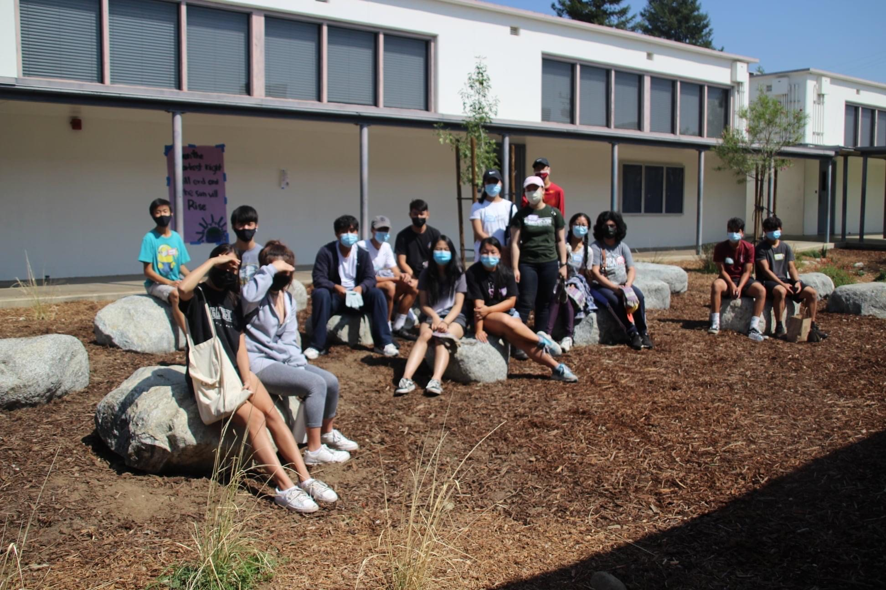
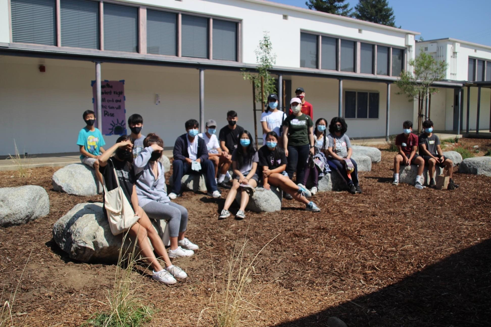
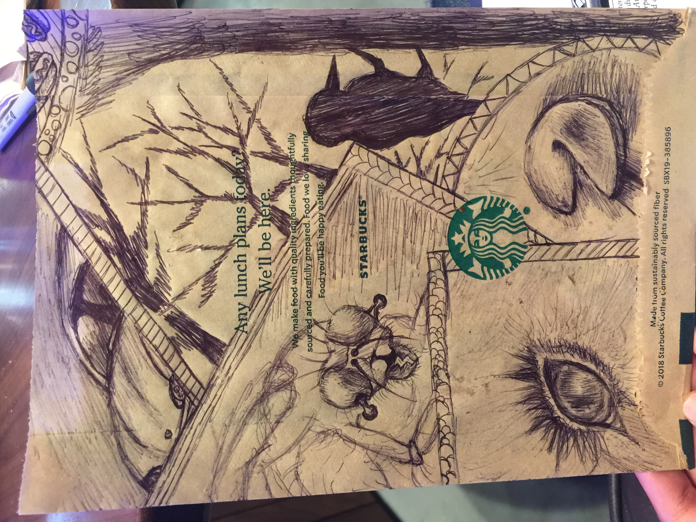
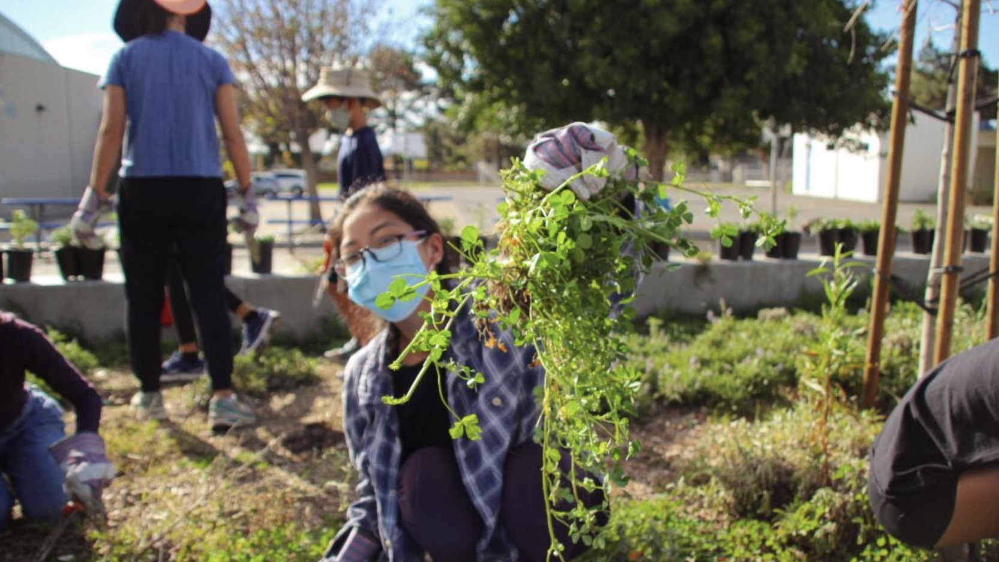
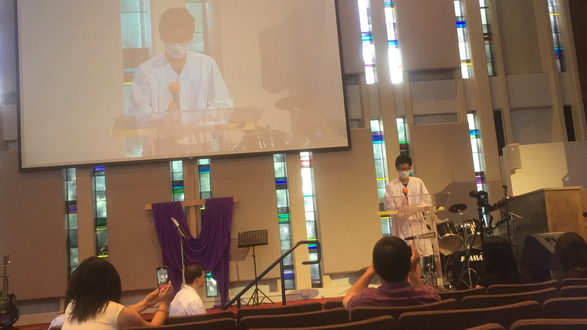
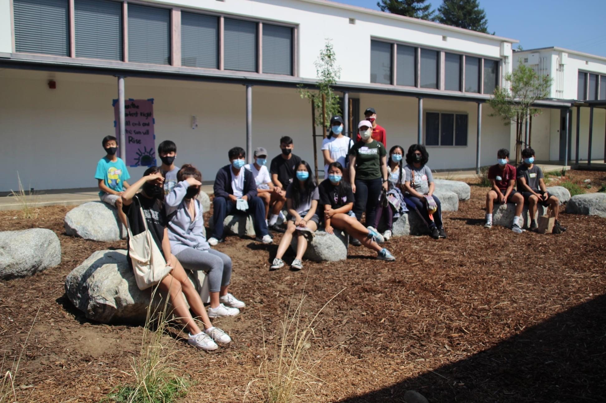
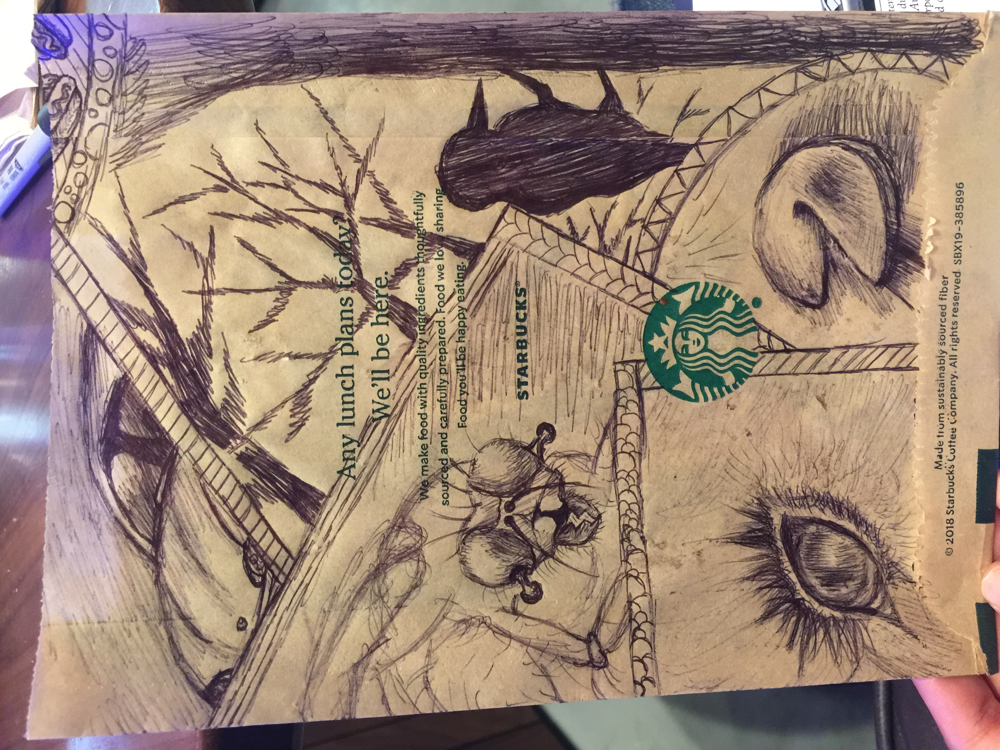
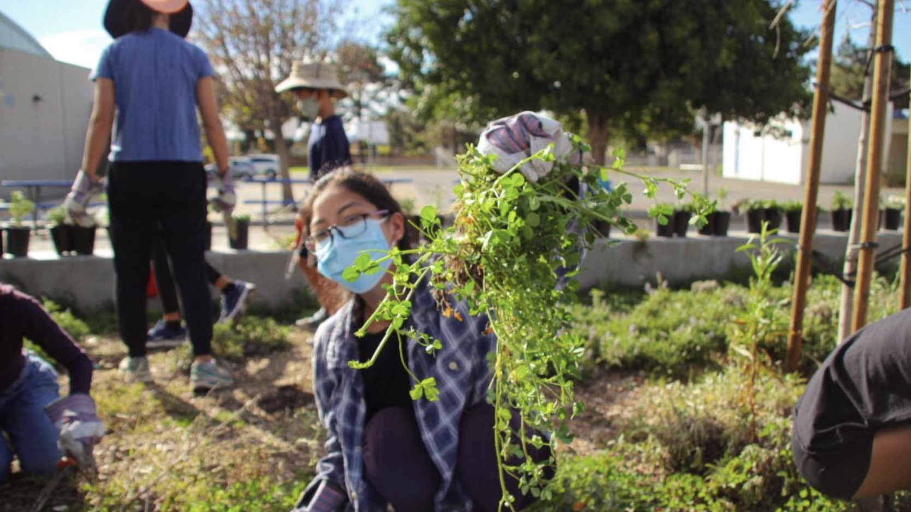
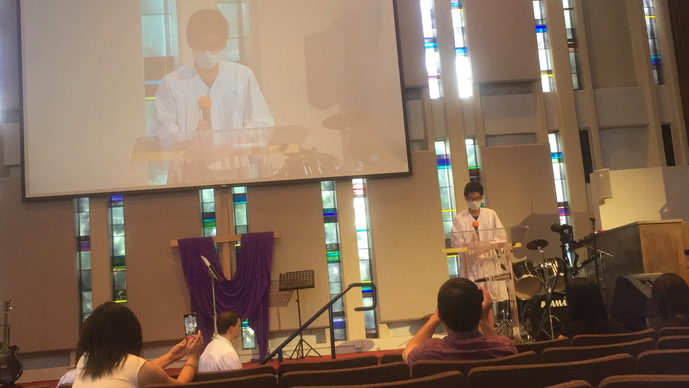

Doris Ma
Doris Ma is a first-year student at the University of California Riverside (UCR). She views herself as an ambivert and finds herself to be a trustworthy confidant. She is currently majoring in Sociology and plans to pursue a degree in Psychology. Her long term goal in life is to become a person capable of making a positive impact on someones' life. She is proud of her accomplishments and is constantly striving for personal growth. She defines herself as: creative, diligent, curious, and open-minded.
Regarding previous experiences in community service, she has volunteered with organizations like Amigos De Los Rios to promote the "greening of the grey" to help better our planet and mitigate the effects of global warming. She has also contributed to the Smithsonian website with transcriptions of historical pieces as a volunteer. She has been finding ways to give back to the community since she was a child, working as a teaching assistant at her church and a teacher's aid at her middle school.
Doris views skills in languages as important to her, she can speak Mandarin fluently and is currently learning Spanish. On a side note, she find languages fascinating, curiosity leading her to listening to music in different languages since she believes music is universal and has no barriers. Doris puts effort in learning lyrics and finding out the meanings behind the songs. She also has some experience in using Microsoft programs and is currently learning the basics of computer science. Her professional experiences include ushering for the Broadway show "A Little Mermaid" and working as an elementary school tutor.
Experience
Usher
• Distributed playbills to audience members
• Ensured and upheld regulations; no flash photography, no food/drinks, etc
• Led guests to their designated seats, guided patrons to the restrooms, and answered any questions
• Assisted in opening doors for intermission/closing and helped with cleanup
Teaching Assistant
• Looked after the Pre-K class
• Help the teacher conduct class
• Guide children through crafts and snack time
Voluteer
• Weeded out invasive vegetation
• Helped plant trees and native shrubs (restore natural habitats and create bioswales)
• Promoted the importance and way of mitigating climate change
• Inform others of the threats of a warming planet
Education
UC Riverside
Arcadia High School
Portfolio
 





 